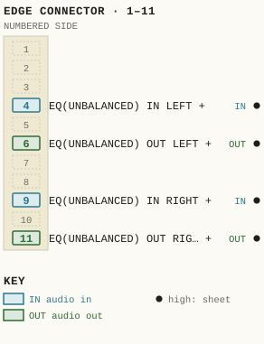
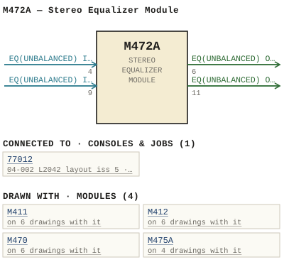

M472A — Stereo Equalizer Module
| Type | module |
| Category | FILTERS |
| Try it | simulator & front panel · download package (zip) |
| Earliest dated evidence | 1986|19 — manual issue date |
| Evidence | "MANUAL ISSUE #1 MARCH 1986" in PUBLIC/Manuals + tech DOCUMENTS/Modules/RE-SCAN - M472A - Stereo Equalizer/M472A - P001 - Title Page.jpg |
| Confidence | high |
| All years found | 1986|19 |
| Used in jobs | 77012 (1977|10) |
| Variants | M472 |
| Folder | DOCUMENTS/Done/Done - Stereo Modification Kits |
| Folder | DOCUMENTS/To Be edited/STEREO FOR THE L SERIES AUDIO CONSOLE |
| Folder | Modules/AMPLIFIERS/M411 |
Connections and circuit (ideal SPICE model)
Drawn live from its RTO-144 connections: run the generator, turn the gain, watch the VU. Open the netlist to see how the model is built.
Pictures


M472A.pinout.svg

M472A.connections.svg 1986 - M472A - P001 - Title Page.jpg
1986 - M472A - P001 - Title Page.jpg 1986 - M472A - 472-01-002 - EQUALIZER MODULE FUNCTIONAL.jpg
1986 - M472A - 472-01-002 - EQUALIZER MODULE FUNCTIONAL.jpg 1986 - M472A - 472-01-002.jpg
1986 - M472A - 472-01-002.jpg 1986 - M472A - 472-02-002 - CHASS VIOO AZO.jpg
1986 - M472A - 472-02-002 - CHASS VIOO AZO.jpg 1986 - M472A - 472-02-002 - ICD DIT COWPORRNT DRSICAATIONP COLGAT.jpg
1986 - M472A - 472-02-002 - ICD DIT COWPORRNT DRSICAATIONP COLGAT.jpg 1986 - M472A - 472-02-002 - UZA AJR- RJO LMUM.jpg
1986 - M472A - 472-02-002 - UZA AJR- RJO LMUM.jpg 1986 - M472A - 472-06-002 - EQUALIZER MODULE COMPONENT LAYOUT.jpg
1986 - M472A - 472-06-002 - EQUALIZER MODULE COMPONENT LAYOUT.jpg 1986 - M472A - P002 - 1-1.jpg
1986 - M472A - P002 - 1-1.jpg 1986 - M472A - P003 - 2-1.jpg
1986 - M472A - P003 - 2-1.jpg 1986 - M472A - P004 - 3-1.jpg
1986 - M472A - P004 - 3-1.jpg 1986 - M472A - P005 - 3-2.jpg
1986 - M472A - P005 - 3-2.jpg 1986 - M472A - P006 - 4-1.jpg
1986 - M472A - P006 - 4-1.jpg 1986 - M472A - P007 - 4-2.jpg
1986 - M472A - P007 - 4-2.jpg 1986 - M472A - P008 - 5-1.jpg
1986 - M472A - P008 - 5-1.jpg 1986 - M472A - P009 - 5-2.jpg
1986 - M472A - P009 - 5-2.jpg 1986 - M472A - P010 - 5-3.jpg
1986 - M472A - P010 - 5-3.jpg 1986 - M472A - P011 - 6-1.jpg
1986 - M472A - P011 - 6-1.jpg 1986 - M472A - P012 - 6-2.jpg
1986 - M472A - P012 - 6-2.jpg 1986 - M472A - P013 - 6-3.jpg
1986 - M472A - P013 - 6-3.jpg 1986 - M472A - P014 - 6-4.jpg
1986 - M472A - P014 - 6-4.jpg 1986 - M472A - P015 - 6-5.jpg
1986 - M472A - P015 - 6-5.jpg 1986 - M472A - P016 - 6-6.jpg
1986 - M472A - P016 - 6-6.jpg 1986 - M472A - P017 - 7-1.jpg
1986 - M472A - P017 - 7-1.jpg 1986 - M472A - P018 - B 472-047-004 L.jpg
1986 - M472A - P018 - B 472-047-004 L.jpg 1986 - M472A - P019 - B 472-047-004 R.jpg
1986 - M472A - P019 - B 472-047-004 R.jpg 19xx - DOC - K2942S - P18 - 3-1.jpg
19xx - DOC - K2942S - P18 - 3-1.jpg 19xx - DOC - STEREO L SERIES - P007.jpg
19xx - DOC - STEREO L SERIES - P007.jpg 19xx - DOC - STEREO L SERIES - P009 - B77012-04-011 L.jpg
19xx - DOC - STEREO L SERIES - P009 - B77012-04-011 L.jpg 1985 - 77012-04-011 - WBS L2042 CONSOLE (STEREO VERSION B) LAYOUT - DRN GEB - ENG GEB - ISS 2.jpg
1985 - 77012-04-011 - WBS L2042 CONSOLE (STEREO VERSION B) LAYOUT - DRN GEB - ENG GEB - ISS 2.jpg 19xx - 472-01-002 - EQUALIZER MODULE FUNCTIONAL - ISS 1.jpg
19xx - 472-01-002 - EQUALIZER MODULE FUNCTIONAL - ISS 1.jpg 19xx - 472-02-002 - EQUALIZER MODULE SCHEMATIC - ISS 1.jpg
19xx - 472-02-002 - EQUALIZER MODULE SCHEMATIC - ISS 1.jpg 19xx - 2042-02-001 - K2042S 1 AND K2042S 2 INPUT AND EQUALIZER SCHEMATIC - ISS 1.jpg
19xx - 2042-02-001 - K2042S 1 AND K2042S 2 INPUT AND EQUALIZER SCHEMATIC - ISS 1.jpgPrice history
| Year | Kind | Price | Listed as | Effective | Source |
|---|---|---|---|---|---|
| 2005|38 | used market value | 200.00 | M472A Stereo Equalizer | wbsps - website ARCHIVE/WBSPS 2008/ARCHIVE/old website/PriceGuide.htm | |
| 2006|39 | used market value | 200.00 | M472A Stereo Equalizer | wbsps - website ARCHIVE/WBSPS 2008/ARCHIVE/jan 2006 shell/priceguide.htm |
Pinout & connections
Each contact as its own documents name it: 4 named (4 high confidence). An empty slot is a contact no page names. Hover a contact for its source; the table under the drawing lists them.
pinout (SVG) · connections (SVG) · pins (JSON)
Pin evidence — 4 contacts
| Pin | Signal | Kind | Confidence | Read from | Source |
|---|---|---|---|---|---|
| 4 | EQ(UNBALANCED) IN LEFT | audio in | high | rto-144 | M472A.rto144.json, p. 1 |
| 6 | EQ(UNBALANCED) OUT LEFT | audio out | high | rto-144 | M472A.rto144.json, p. 1 |
| 9 | EQ(UNBALANCED) IN RIGHT | audio in | high | rto-144 | M472A.rto144.json, p. 1 |
| 11 | EQ(UNBALANCED) OUT RIGHT | audio out | high | rto-144 | M472A.rto144.json, p. 1 |
Dates found in the documents
| Year | Kind | Text | File |
|---|---|---|---|
| 1986|19 | manual issue date | MANUAL ISSUE #1 MARCH 1986 |
1986 - M472A - P001 - Title Page.jpg |
Physical manual inventory
| Item | Location | Status | Scanned |
|---|---|---|---|
| RE-SCAN - M472A - Stereo Equalizer | DUPLICATE | Recently scanned and stiched by WB | |
| M472A - Stereo Equalizer | NEEDS TO BE RESCANNED |
Photos & scans (35)


Parts list — board M472A (34 parts)
From 1986 - M472A - P011 - 6-1.jpg, page 1 (scanned); also in timelines/data/bom.csv.
| Ref | Part | Value | Manufacturer | Mfr part no. |
|---|---|---|---|---|
| M472A | STeREO EQUAL IZER MQDULE | |||
| C10 | uF/6 V Philips | 68 | 12253689 | |
| C11 | uF/1o Kemet | 4.7 | T3908475M01OAS | |
| C12 | uF Aselco | 0.022 | cQ92-MC-100-223M | |
| C16 | PF Philips | 680 | 2222-630-03681 | |
| C18 | PF Aselco | 2700 | co92-MC-100-272M | |
| C26 | C27 pF 5% Aselco | 8000 | CQ92-MC-100-8O2M | |
| C30 | uF/6 V Philips | 68 | 12253689 | |
| C31 | uF/1o Kemet | 4.7 | T3908475M01OAS | |
| C32 | uF Aselco | 0 .022 | cQ92-MC-100-223m | |
| C34 | uF/6 Philips | 68 | 2253689 | |
| C36 | Capacitor PF Philips | 680 | 2222-630-03681 | |
| C37 | PF Aselco | 2700 | cQ92-MC-100-272M | |
| C39 | PF Philips | 220 | 2222-638-03221 | |
| C40 | uF/1o V Kemet | 33 | T390D336M01OAS | |
| C41 | 0 . uF/100 Sprague | 1CIOXZRTO4MOSOB | ||
| C42 | uF '25 Philips | 22 | 426ETF22 | |
| C48 | uF/100 Sprague | 1c1Ox7RIOLMOSOB | ||
| C58 | uF/1oo V Sprague | {CTOX7R1OGMOSOB | ||
| DS1 | LED, Red H.P | FLVI1O | ||
| R1 | Resistor 1/4w 15K Philips | 57 | ||
| R4 | Rs) Potentiometer Sk Clarostat WbS | 10-055 | ||
| R6 | Resistor 1/4w 15k Philips | 5% | ||
| R19 | Resistor 1/4w 3K Philips | 5% | ||
| R25 | Resistor 1/4w 15k Philips | 5% | ||
| R29 | Resistor 1/4w 1Sk Phillps | 5% | ||
| R36 | Resistor 1/4w 15K Philips | 59 | ||
| R45 | Resistor 1/4w 5% Philips | 1K | ||
| R71 | Resistor 1/4w 15k Philips | 5% | ||
| R16 | Knob (Black) | 021-2225 | ||
| R27 | Knob (Black) | 021-2225 | ||
| R43 | Knob (Black) | 021-2225 | ||
| SW1 | Cap ( Grey ) Tt FM-GRY | |||
| SW2 | (Red) FG-RED |
Consoles & jobs it is connected to (1)
Their own drawings name this module.
| Job | Year | Drawing | Page |
|---|---|---|---|
| 77012 | 1977|10 | 1985 - 77012-04-011 - WBS L2042 CONSOLE (STEREO VERSION B) LAYOUT - DRN GEB - ENG GEB - ISS 2.jpg | 1 |
Named in other drawings & documents (4)
From the manuals
Each manual split into its sections. Text that is the same in many Ward-Beck manuals (warranty, address, standard notes) is kept once on the Boilerplate page and linked.
General description (1)
Description — 269 words · 1986 - M472A - P006 - 4-1.jpg, page 1
M47ZA STEREO EQUALIZER MODULE The left channel of the M472A Stereo Equalizer wili be described . Input The unbalanced audio input appears at pin of the module conn- ector It is routed directly to the normally closed contact of Equalizer Insert switch SWZA and to buffer amplifier U1B. Mid-Frequensy Equalizer The output from the input buffer amplifier 418 feeds summing amplifier UIA and the Mid-Frequency cut/boost control R4: R4 bridges between the input and output of summing amplifier UIA.
The arm of Rb connects the signal to the state variable filter U3A, U3B, and U4A . C6 through C9 along with R15 and R18 determine the resonant frequency of the filter_ R8 adjusts the overali filter gain and therefore its 0 High 0 is nominally four and Low is nominally two. The filter output is fed back into summing amplifier UIA via C5_ This feedback signa/ adds or subtracts from the maln signal in proporation to its magnitude and Phase relationship.
Lew_Frequency Equalizer The output from UIA feeds the audio signal to the Iow frequency summing amplifier U2B, Low Frequency cutlboost control R23 bridges across 42B, with the arm of this control coupling the audio signal through C11 to Low-pass filter u4B. The frequency determining components of this filter are the LF shelf control Rz7 , Rz9 , C12 and C13.
The filter output is fed back to summing amplifier 028 through R3o . Dependent upon the setting of cut/boost control R23 the signal, is added or subtracted from the main signa/ path thus affecting the frequency response characteristics of the Low Frequency portion of the audio spectrum. 4-1
- source: 1986 - M472A - P006 - 4-1.jpg, p. 1
Specifications (1)
Technical Data — 203 words · 1986 - M472A - P002 - 1-1.jpg, page 1
M472A STEREO EQUAL IZER MODULE Note Specifications are based on voltage levels of 600 ohm system unless otherwise specified. Gain: Unity +/-0.25 dB _ Frequency Response +/-0.5 dB from 20 Hz to 20 kHz with the equal- izer inserted and cut/boost controls in the detent pos ton Noise -90 dBm absolute (20 Hz to 20 kHz) equalizer cut/boost controls in the detent position Harmonic Distortion Less than 0.1% from 20 Hz to 20 kHz at +20 dBm output Ievel or Iess Less than 0.
01% at kHz at +20 dBm output Ievel . Source Impedance Less than 10 ohms unbalanced_ Input mpedance Greater than 4k ohms unbalanced_ Input Level ~6dBm nominal +20 dBm maximum. Output (mpedance Less than 50 ohms unbalanced_ Load mpedance Sk ohms or greater Output Level -6 dBm nominal +22 dBm maximum. Channel Separation: Greater than 60 dB _ Phasing Input and output are in phase with the equaliz- ing controls in the 0 detent position.
Equalization Tracking: Within 0.5 dB_ Power Requirements: +/-25 volts dc 65 mA . Ambient Temperature Dimensions to 60 degrees Celsius. 1.60" wide 7 . 00" high 6.50" deep (41 Mm 178 Mm 165 mm) . Weight: M472A Ib oz (0,565 kg) net . 1-1
- source: 1986 - M472A - P002 - 1-1.jpg, p. 1
Parts list (text) (1)
Parts List — 112 words · 1986 - M472A - P016 - 6-6.jpg, page 1
M47ZA STEREO EQUAL ZER MQDULE MISCELLANEOUS COMPONENTS USED ON DESCRIPT ION MFG MFG PART NUMBER DSI LEd Mounting Bracket WBS A91-011 R4) R5) Knob (Black) Cap (Red) Elma 023-3525 040-3635 R1s) R16 R17) R18) Knob (Black) Cap Red) 021-2225 04o-1635 R23 ) R24 ) Knob (Black) Cap (Green) 023-3525 040-3665 R27 R28) Knob (Black) Cap White) 021-2225 040-1665 R34 ) R35 ) Knob (Black) Cap Yellow) 023-3525 040-3655 R43 R44) Knob (Black) Cap (Yellow) 021-2225 040-1655 SW1 Cap ( Grey ) Tt FM-GRY Sw2 (Red) FG-RED UI-U10 Pin Dip Socket AMP 640463-3 WBS recommends the use of replacement parts made by the specified manufacturers for continued opt Mum equipment performance , 6-6
- source: 1986 - M472A - P016 - 6-6.jpg, p. 1
Drawings (6)
Each scan with its trace laid over it: the slider runs from the scan to the vector drawing. Click one to see it large and save it as SVG, DXF, KiCad, PDF or PowerPoint.
Equalizer Module Functionalviewer
1986 - M472A - 472-01-002viewer
Chass Vioo Azoviewer
Icd Dit Cowporrnt Drsicaationp Colgatviewer
Uza Ajr- Rjo Lmumviewer
Equalizer Module Component Layoutviewer
19xx - DOC - STEREO L SERIES - P009 - B77012-04-011 Lviewer
Read from the drawing title blocks.
| Drawing | Title | Date | Drawn by | Checked by | Iss. | Source |
|---|---|---|---|---|---|---|
| 472-01-002 | Equalizer Module Functional | file | ||||
| 472-01-002 | file | |||||
| 472-02-002 | Icd Dit Cowporrnt Drsicaationp Colgat | 1 | file | |||
| 472-02-002 | Uza Ajr- Rjo Lmum | file | ||||
| 472-02-002 | Chass Vioo Azo | file | ||||
| 472-06-002 | Equalizer Module Component Layout | 1 | file |